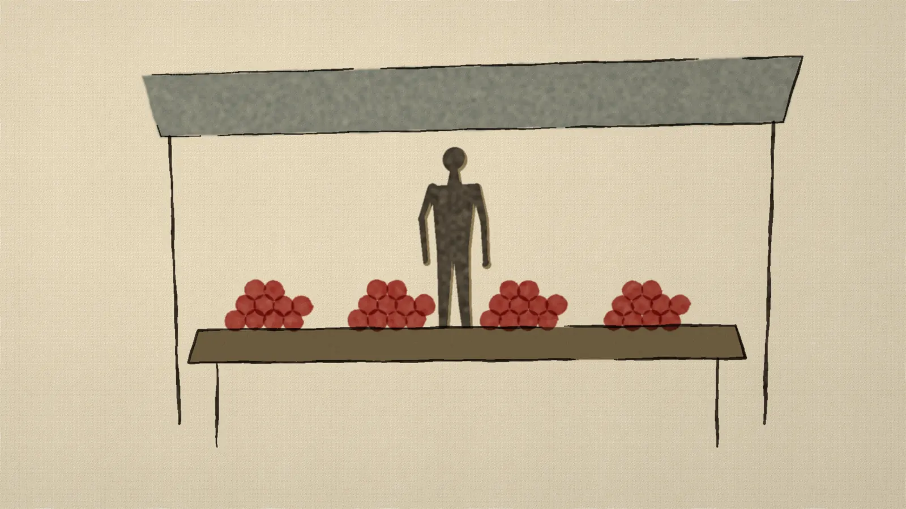

Having your say, and recalling leaders
Lesson 7 of 8

The notice on the chief’s board
A notice goes up at the chief’s office: “County Budget Public Participation Forum, Ward Hall, Thursday 10 a.m.”
Akinyi (made up) sees it and keeps walking. She’s busy, and anyway “they’ve already decided”.
Three months later her market fee doubles. The decision was made at a meeting she was invited to and didn’t attend.
This lesson is about the meetings most people skip, and why skipping them is expensive.
All power belongs to you
The Constitution’s very first line of law: “All sovereign power belongs to the people of Kenya” (Art 1(1)). You use it directly, or through the leaders you elect (Art 1(2)).
Voting every five years is the “through leaders” part. Public participation is the directly part. It’s one of the national values that bind every leader (Art 10(2)(a)), and a main reason devolution exists (Art 174(c)).
Your tools
| Tool | What it means | Article or law |
|---|---|---|
| Open sittings | Parliament, the county assembly and their committees must sit in public. They can shut out the public or media only in exceptional cases, with reasons | 118, 196 |
| Public participation | Parliament and county assemblies must make it possible for the public to take part in their work: Bills, budgets, fees | 118(1)(b), 196(1)(b) |
| Public finance | Public money must be handled with openness, accountability and public participation | 201(a) |
| Information | Every citizen can get information held by the State | 35 |
| Petitions | You can present petitions to public authorities (Art 37), and petition Parliament to make, change or cancel any law (Art 119) | 37, 119 |
| County platforms | Counties must set up ways for people to take part: town hall meetings, budget forums, notice boards for jobs and tenders, project site visits, citizen forums and online platforms | County Governments Act, ss.87, 91 |
| Court | Anyone can go to court if the Constitution is broken or threatened, including on behalf of others or in the public interest | 22, 258 |
The County Governments Act also promises timely access to information, and reasonable access to the process of making policies, laws, budgets and permits (s.87).
Does participation actually work?
Sometimes, yes, because courts take it seriously.
A real example (court order reported in the press): in May 2024, sixty traders in Nyandarua told the High Court that their county assembly had doubled trade licences without properly asking the public. The court ordered licence and permit fees kept as they were while it heard the case (The Standard, 30 May 2024). The traders got that order because the law says the people must be asked. Whether the court finally struck the fees down is yet to be confirmed, as of Friday, 27 November 2026.
A forum you attend, a written comment you hand in, and a petition with signatures all leave a record. If an assembly ignores the public, that record is what a court looks at.
How to take part, step by step
- Watch for notices. County websites, county assembly notice boards, the chief’s office, local radio and newspapers.
- Get the document first. Ask for the draft budget, Finance Bill or project plan. It’s your right (Art 35).
- Read the part that touches you: your ward’s projects, the fees you pay.
- Go, or send a written comment. Write your name, ward, what you support or oppose, and why. Keep a copy.
- Go with others. A group of traders, boda riders or parents is harder to ignore.
- Follow up. Ask your MCA how they voted, and why.
Recall: firing a leader before five years are up
Think of hiring a watchman for five years. After a year he’s asleep through every break-in. You don’t have to wait four more years: you can fire him, if you show a good reason and follow the contract. For leaders, the “contract” is the law.
Who can be recalled
- Your MP, County Woman Member and Senator: yes. The Constitution gives voters the right to recall their member of Parliament (Art 104(1)). Parliament must set the grounds and the steps by law (Art 104(2)).
- Your MCA: yes, under the County Governments Act, s.27.
- The President and the Governor: no recall by voters. They can be removed through impeachment by elected representatives (Art 145 for the President; Art 181 and County Governments Act, s.33 for the Governor). See Lesson 6.
Recalling an MCA (County Governments Act, ss.27 to 28, as amended in 2020)
- Grounds: gross violation of the Constitution or any other law; incompetence; gross misconduct; or a conviction for an offence punishable by at least six months in prison (s.27(2)).
- Timing: not in the first 24 months after the election, and not in the last 12 months before the next general election (s.27(4)).
- Only once per term (s.27(5)).
- The petition: filed with IEBC, in writing, by a voter in the ward, stating the grounds, with the names, ID numbers and signatures of at least 30% of the ward’s registered voters, who must reflect the ward’s diversity, plus the fee for an election petition (s.28).
Recalling an MP: the rules are unsettled
The Elections Act, ss.45 to 48, sets out the steps for recalling an MP. But on 14 July 2017, in Katiba Institute & another v Attorney General & another, the High Court declared several of those rules unconstitutional, including the narrow list of grounds, the requirement for a High Court judgment before a recall can start, the bar on losing candidates starting a recall, and the rule that a recall vote counts only if half of all registered voters take part (judgment on Kenya Law). Parts of the MCA rules were struck down at the same time, and Parliament rewrote the MCA rules in 2020.
What that means for you: the right to recall your MP is in the Constitution, but the exact steps today are not settled. Before you start, ask IEBC and a lawyer.
Has any recall actually succeeded? We searched and couldn’t find a completed recall of an MP or MCA. That is yet to be confirmed, as of Friday, 27 November 2026. If you know of one, open an issue with the source.
So, in practice, the watchman can be fired, but the contract makes it hard. That’s why the five-year interview, your vote, and the everyday checks in this lesson matter so much.
What you can do
- Go to one budget forum this year, or send one written comment. Keep a copy.
- Ask for documents under your right to information (Art 35): your ward’s projects, tenders, payments.
- Sit in the public gallery of your county assembly once. It’s your right (Art 196).
- Start or sign a petition to your county assembly, or to Parliament (Art 119).
- For a recall, collect evidence of the grounds first, and talk to IEBC and a lawyer before collecting signatures.
Where to go
| If… | Go to |
|---|---|
| A county or national office refuses you information, or ignores your request | Ombudsman (CAJ): toll free 0800 221 349, complain online |
| You want to petition Parliament | parliament.go.ke, phone (254-2) 2221291 |
| You want to start a recall | IEBC: (020) 2877000, info@iebc.or.ke |
| You need legal advice and can’t pay | National Legal Aid Service: toll free 0800 720 640 |
| You suspect public money in a project was stolen | EACC: toll free 1551 |
Full details are in WHERE-TO-GO.md.
Quick quiz
- Who does sovereign power belong to, according to Article 1?
- Can a county assembly hold its budget debate behind closed doors?
- Name three ways a county must let people take part (County Governments Act, s.91).
- How many of the ward’s registered voters must support a petition to recall an MCA?
- Can voters recall a Governor?
Answers
- The people of Kenya (Art 1(1)).
- Normally no. Sittings must be public, unless the speaker decides there are justifiable reasons in exceptional circumstances (Art 196(1)(a), (2)).
- Any three of: online platforms, town hall meetings, budget forums, notice boards, development project sites, citizen forums.
- At least 30% (County Governments Act, s.28(2)(b)).
- No. A Governor can be removed by the county assembly and the Senate (Art 181; County Governments Act, s.33), not recalled by voters.